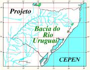
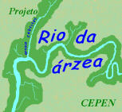
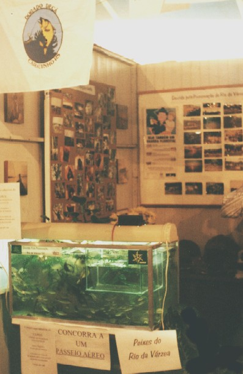
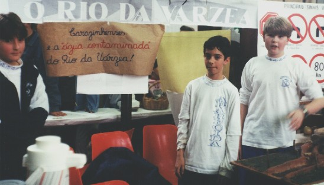
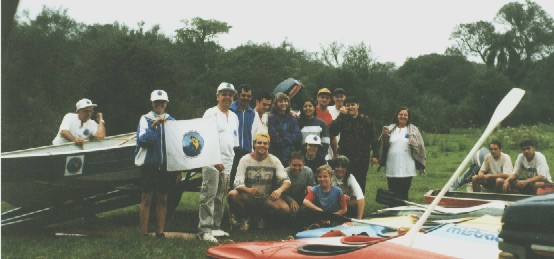

P
ara o Projeto Bacia do Rio Urugua
i

Subprojeto
Bacia do Rio da Várzea
Participação
Comunitária


Local: Parque do Várzea - Carazinho - RS - Brasil Foto: arquivo CEPEN / 306p / Marcelo De Negri Xavier
Exposição/feira agropecuária de Carazinho.
Exposição dos trabalhos juntamente com o Clube DORADO DE CÁ.

Local: Carazinho - RS - Brasil Foto: arquivo CEPEN / 171p / Marcelo De Negri Xavier
Estudantes em Feira de Ciências do Colégio Nossa Senhora Aparecida
Veja mais, nas Campanhas:
"De
s
cidas pela preservação do Rio da Várzea"
clique aqui

Local: Carazinho - RS - Brasil Foto: arquivo CEPEN / 297p / Marcelo De Negri Xavier
Campanha: De
s
cida pela Preservação do Rio da Várzea